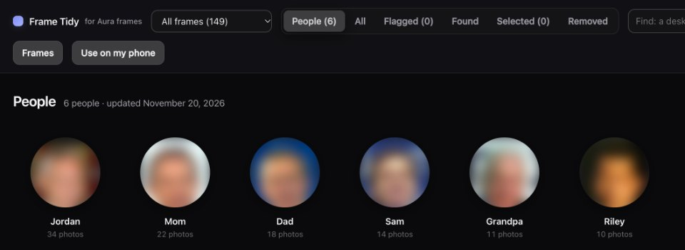
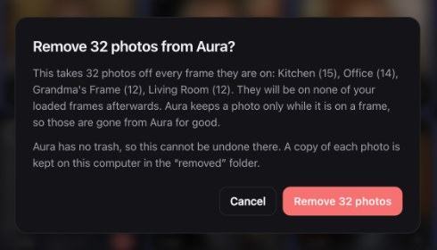

Frame Tidy finds every photo of one person across your frames, lets you check them, and removes the ones you choose. No more scrolling through thousands of photos one by one.
Download for MacFree · macOS 12.3 or later · Apple silicon and Intel
How it works
Aura has no way to find everyone's photos of a person. Frame Tidy does that part for you, and leaves every decision to you.
Pick the frames to look through. Frame Tidy copies their photos to your Mac so it can look at them there. Nothing on your frames changes yet.
It groups the faces it finds into people, like a photo album. Open the person you want gone and you'll see every photo they're in.
Untick anything that isn't them. When it looks right, you'll see exactly what will be removed and from which frames before anything happens.
A look inside
Every match starts out ticked. Untick anything that isn't them, and see exactly what will happen before you confirm.


Shown with a test account and public test photos, blurred here for privacy. In the app you see your own photos clearly.
Your privacy
There's no account to make and no company in the middle. Frame Tidy talks only to Aura, and only when you ask it to.
Faces are recognised on your Mac. Nothing is uploaded anywhere. Your password goes only to Aura and is never saved.
You see the photos and the frames before anything is removed, and you press the button yourself, so any face-matching mistakes get caught first.
Before a photo is removed, a full-size copy is saved on your Mac. Changed your mind? Put it back from the Removed tab, or add your copy again.
Install
Any Mac with macOS 12.3 (Monterey) or newer, with an Apple chip or an Intel processor. It's the same download for both.
On macOS 12.0 to 12.2? Install the free update first: System Preferences › Software Update.
Updates are easy too: when a new version is out, Frame Tidy tells you. Download it the same way and replace the old app. Everything you've done is kept.
Questions
No. Frame Tidy is an independent, open-source app, not made by, endorsed by or connected with Aura. It uses the same private connection Aura's own app uses. Aura's terms of service don't allow tools like this, so using it is your choice, and Aura could change something that stops it working.
Usually. Aura has no trash, so a photo that's no longer on any frame is gone from Aura. That's why Frame Tidy saves a full-size copy first. If the photo is still on another of your frames, Put back returns it in one click. If not, the saved copy is on your Mac and you can add it again with the Aura app.
Good, not perfect. Relatives who look alike can get mixed up, and small or side-on faces can be missed. You check every photo before anything is removed, and you can untick anything that isn't the right person.
Your photos, from Aura, onto your Mac. A face-recognition model (InsightFace, about 290 MB) once, after you agree; it has its own licence for non-commercial use. An optional model for searching photos by description ("a dog", "a receipt"), only if you use that. And, once a day, a check for a newer version of Frame Tidy.
No. It's free and open source. There are no accounts, no subscriptions and no ads.
Not yet. It's a Mac app for now. Once it's set up on your Mac, you can look through photos from your phone on your home wifi if you like.
Tell us on GitHub. Please don't attach real photos. For anything about security, use the private reporting form instead.
Free, private, and it only does what you approve.
Download for MacmacOS 12.3 or later · Apple silicon and Intel